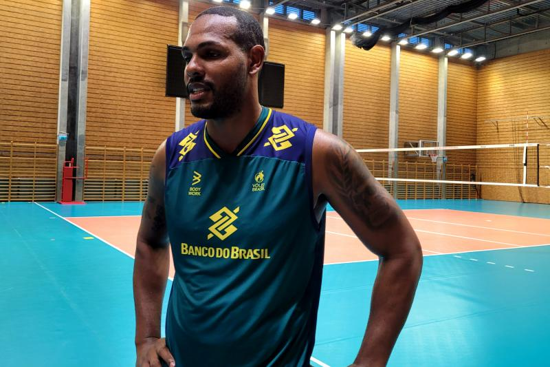
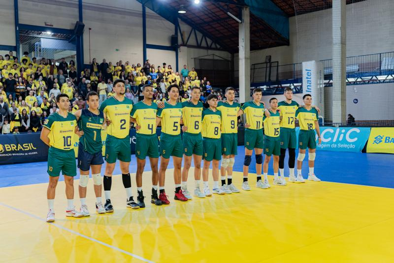

Com Leal no grupo, seleção masculina encara a Polônia pelas quartas de final da Liga das Naçoẽs.


O voleibol contribui no desenvolvimento dos indivíduos, promove valores positivos, constrói comunidades esportivas, traz benefícios à saúde e muito mais.
Muitos jogadores têm dificuldades e/ou dúvidas com certos fundamentos, exercícios e regras do voleibol, principalmente os jogadores iniciantes, mas nem sempre existe um tutor para ajudá-los.
A ministra do Ministério do Esporte, Ana Moser, ex-atleta e medalhista olímpica de vôlei, destacou em uma reunião que:
"O esporte é um fenômeno muito amplo, e é muito importante abrir canais de conversa para pensar nele como um todo no país. Queremos a contribuição de cada um para que possamos, juntos,construir um novo cenário para o esporte amador e profissional” (MINISTÉRIO DO ESPORTE, 2023).
Dessa forma, podemos aplicar essa fala visando o voleibol, o que é o principal objetivo da realização deste trabalho.
Nesse sentido, intenciona-se melhorar a divulgação do voleibol como esporte, ajudando os jogadores a realmente entender as regras, fundamentos, funções e sua história a fim de sanar dúvidas sobre o assunto.
Tal divulgação de informações efetivar-se-á por meio de um website de forma didática e de entendimento.
Isso tem grande importância e deve ser feito de maneira recorrente, tendo em vista que a maioria dos sites informativos sobre voleibol são textos corridos e nada didáticos, o que se torna um problema,
já que temos como público principal jogadores iniciantes.
Circuito Mundial de Vôlei de Praia: Duda e Tainá querem medalhas na etapa Elite do Canadá como presentes de aniversário.
Seleção feminina vence Tailândia no encerramento da fase classificarória da Liga das Nações 2023.
Com Leal no grupo, seleção masculina encara a Polônia pelas quartas de final da Liga das Naçoẽs.